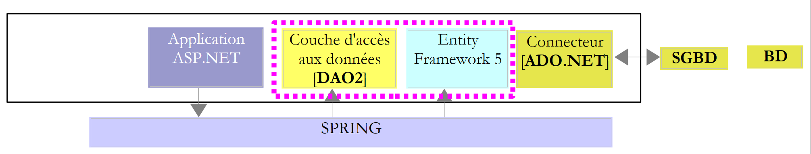

1. 简介
1.1. Objectif
文档的PDF版本可在此处获取 |HERE|。
文档中的示例可通过 |HERE| 获取。
Entity Framework 是一种最初由微软创建、现已开源的 ORM（对象关系映射器）。在某门 ASP.NET 课程中，我为某个 Web 应用程序采用了以下架构：
 |
NHibernate [http://sourceforge.net/projects/nhibernate/] 框架是早于 Entity Framework 出现的 ORM。这是一个成熟的产品，支持连接各种数据库。 ORM 将 [DAO] 层（数据访问对象）与 ADO.NET 连接器进行隔离。 ORM 负责向连接器发出 SQL 指令。[DAO] 层则使用 ORM 提供的接口。 而该接口又依赖于ORM。因此，更换ORM意味着需要更换[DAO]层。
这种架构能够很好地应对 SGBD 的变更。
当将 [DAO] 层直接连接到 ADO.NET 连接器时，更改 SGBD 会影响 [DAO] 层：
- SGBD 层的数据类型并不完全相同；
- SGBD 没有相同的primary key生成策略；
- SGBD 包含专有 SQL；
- [DAO] 层可能使用了与特定 SGBD 相关的库；
- ……
当 ORM 连接到 ADO.NET 连接器时， 更换 SGBD 相当于修改 ORM 的配置，使其适应新的 SGBD。[DAO] 层保持不变。
Spring.NET [http://www.springframework.net/index.html] 框架负责应用程序各层的集成。如上所述：
- 应用程序 ASP.NET 向 Spring 请求 [DAO] 层的引用；
- Spring利用配置文件创建该层并返回其引用。
只要各层保持相同的接口，这种架构就能很好地适应层级的变更。修改上文中的 [DAO] 层，只需修改 Spring 的配置文件，使新层替代旧层被实例化。 由于这些层实现了相同的接口，且 ASP.NET 层使用该接口，因此 ASP.NET 层保持不变。
因此，我们拥有了一个灵活且可扩展的架构。为了演示这一点，我们将用 Entity Framework 5 替换 ORM NHibernate：
 |
我们将分几个步骤进行：
- 首先通过多个 SGBD 文件了解 Entity Framework 5；
- 构建 [DAO2] 层；
- 将现有的 ASP.NET 应用程序与这个新的 [DAO] 层连接起来。
1.2. 使用的工具
测试在搭载 Windows 7 专业版、配备 Intel Core i7 处理器和 8 GB 内存的 HP EliteBook 笔记本电脑上进行。我们将使用 C# 作为开发语言。
本文档使用以下工具，均可免费获取：
开发工具：
- Visual Studio Express for Desktop 2012 [http://www.microsoft.com/visualstudio/fra/downloads]；
- Visual Studio Express for Web 2012 [http://www.microsoft.com/visualstudio/fra/downloads]。
SGBD SQL Server Express 2012：
- SGBD：[http://www.microsoft.com/fr-fr/download/details.aspx?id=29062]；
- 一个管理工具：EMS SQL Manager for SQL Server Freeware [http://www.sqlmanager.net/fr/products/mssql/manager/download]。
SGBD Oracle Database Express Edition 11g Release 2：
- SGBD：[http://www.oracle.com/technetwork/products/express-edition/downloads/index.html]；
- 管理工具：EMS SQL Manager for Oracle Freeware [http://www.sqlmanager.net/fr/products/oracle/manager/download]；
- 一个 Oracle 客户端：NET：ODAC 11.2 Release 5 (11.2.0.3.20) 带 Oracle Developer Tools for Visual Studio：[http://www.oracle.com/technetwork/developer-tools/visual-studio/downloads/index.html]。
SGBD MySQL 5.5.28：
- SGBD：[http://dev.mysql.com/downloads/]；
- 管理工具：EMS、SQL、Manager for MySQL、Freeware [http://www.sqlmanager.net/fr/products/mysql/manager/download]。
SGBD PostgreSQL 9.2.1：
- SGBD：[http://www.enterprisedb.com/products-services-training/pgdownload#windows]；
- 管理工具：EMS SQL Manager for PostgreSQL 免费软件 [http://www.sqlmanager.net/fr/products/postgresql/manager/download]。
SGBD Firebird 2.1：
- SGBD：[http://www.firebirdsql.org/en/firebird-2-1-5/]；
- 一个管理工具：EMS SQL Manager for InterBase/Firebird 免费软件 [http://www.sqlmanager.net/fr/products/ibfb/manager/download]。
LINQPad 4：LINQ（语言 INtegrated 查询）的学习工具 [http://www.linqpad.net/, http://www.linqpad.net/GetFile.aspx?LINQPad4.zip]。
1.3. 源代码
以下示例的源代码可在 URL [通过实例学习 Entity Framework 5 Code First（2012）] 中获取。
 |
这些是 Visual Studio 2012 项目 [1]，汇集在一个解决方案 [2] 中。 在文件夹 [databases] 中，会发现一个按 SGBD 使用的文件夹。其中包含用于生成这些 SGBD 示例数据库的脚本 SQL。
1.4. 方法
为了了解 Entity Framework 5 Code First，我首先参考了以下书籍：Jon Galloway、Phil Haack、Brad Wilson 和 Scott Allen 合著、Wrox 出版社出版的《Professional ASP.NET MVC 3》。 在该书的示例应用中，作者将 Entity Framework (EF) 作为 ORM 使用。由于我对此不熟悉，便上网查阅了更多资料。 我发现最新版本是 EF 5，且与 EF 4 存在兼容性问题，因为用 EF 5 测试书中的代码时出现了编译错误。
随后我发现，使用EF有多种方式：
- 模型优先（Model First）：关于这种 EF 方法的文章有很多，例如 [http://msdn.microsoft.com/en-us/data/ff830362.aspx]。该文章的引言如下：
摘要：本文将探讨随 .NET Framework 4 和 Visual Studio 2010 一起发布的新版 Entity Framework 4。我将从“模型优先”的角度探讨其使用方法，其前提是您可以基于模型驱动数据库设计，并以此模型为依据以声明式方式构建数据库和数据访问层。 该模型包含以实体和关系形式呈现的数据描述，为处理 ADO.NET 提供了强有力的方法，并通过模型定义与其实现之间的抽象实现了关注点的分离。
ORM 在数据库表与类之间架起了桥梁。
 |
在上图中，
- 在 EF5 层的左侧，是称为实体的对象；
- 在 EF5 层的右侧，则是数据库表。
 |
[DAO]层处理数据库表中的图像对象。这些对象被整合到一个持久化上下文中，并被称为实体（Entity）。 通过对ORM的调用，对实体所做的修改（插入、修改、删除）将同步反映到数据库表中。 此外，[DAO] 层还具备一种名为 LINQ to Entity（INtegrated 查询语言）的查询语言，该语言针对实体而非表进行查询。Model First 方法是指使用图形化工具构建实体。 首先定义每个实体及其与其他实体的关联关系。完成这一步后，工具将生成：
- 反映图形化构建的实体的各类类；
- 用于生成数据库的 DDL（数据定义语言）。
我找到的关于该方法的示例均使用了 Visual Studio 2010 Professional 以及一个名为 ADO.NET Entity Data Model 的模型。我曾使用 Visual Studio 2010 Professional 测试过该模型，但当我切换到目标环境 Visual Studio Express 2012 时，发现该模型已不可用。 因此我放弃了这种方法。
- 数据库优先（Database First）：该方法以现有数据库为起点。基于此，工具会自动生成数据库表的实体映射。然而，我找到的示例（例如 [http://msdn.microsoft.com/en-us/data/gg685489.aspx]）同样使用 Visual Studio 2010 Professional 以及名为 ADO.NET 的实体数据模型。 因此，我最终也放弃了这种原本最偏爱的方案。若要确定现有数据库中应采用哪些实体作为映射对象，使用生成工具来处理本应是再简单不过的事。
- 代码优先（Code First）：由开发者自行编写构成实体的类。这需要对 EF 的工作原理有基本的了解。我选择了这条路，因为它可以在 Visual Studio Express 2012 上使用。
掌握这些后，我按照以下方式进行工作：
- 首先为 SQL Server Express 2012 编写代码，因为针对该版本的示例最为丰富；
- 在调试完该代码后，将其移植到其他 SGBD 版本（Firebird、Oracle、MySQL、PostgreSQL）。
此处我们将采取不同的处理方式。我将首先描述 SQL Server 的全部代码，然后说明如何将其移植到其他 SGBD 版本中。在此次移植过程中，进行了以下调整：
- 数据库具有专有特性。我特别使用了触发器（Triggers）来自动生成某些列的内容。每个 SGBD 都有其独特的管理方式；
- 表中的图像实体可能会发生变化，但这属于有意为之。我本可以选择适用于所有数据库的通用实体；
- SGBD的驱动程序ADO.NET发生了变更；
- 连接到 SGBD 的字符串发生了变化。
采用的流程如下：
- 实体与数据库的关联。填充数据库；
- 使用 LINQ 查询导出数据库；
- LINQPad，作为LINQ的学习工具；
- 实体的添加、删除和修改；
- 访问并发管理；
- 将持久化上下文保存到事务中；
- 在持久化上下文之外修改实体；
- 即时加载与延迟加载；
- 构建 [DAO] 层；
- 构建Web层ASP.NET。
1.5. 目标受众
本指南面向初学者。
本文并非关于 Entity Framework 5 Code First 的教程。若需系统学习，可参考 Julie Lerman 和 Rowan Miller 所著、O'Reilly 出版社出版的《Programming Entity Framework: Code First》。本文绝非旨在面面俱到，仅阐述了我个人理解 ORM 所采用的方法。 我认为该方法对其他接触EF5的人士可能有所帮助。我的目标仅限于此。
1.6. 关于 developpez.com 的相关文章
上述书籍将作为参考资料。此外，developpez.com上还有一些专门讨论 Entity Framework 的文章。以下列举其中几篇：
- “Entity Framework——Code First 方法”，2012年6月——作者：Reward。该文章与本文部分内容重合。但在某些方面，特别是关于类继承与表之间的“映射”方面，其探讨更为深入；
- “Entity Framework 入门”，2008年12月，作者：Paul Musso；
- “使用 Entity Framework 创建类模型”，2009年4月，作者：Jérôme Lambert；
- “Linq to SQL 与 Sql 及 Entity Framework 的性能对比”，2011年6月，作者：Immobilis；
- "Entity Framework Code First：启用自动迁移"，2012年6月，作者：Hinault Romaric；
- “使用 CRUD、Razor 和 Entity Framework 创建应用程序”，2012 年 5 月，作者：Hinault Romaric；
- “Entity Framework：探索 Code First 迁移”，2012年6月，作者：Hinault Romaric；
如上所述，本文档并非详尽无遗。建议阅读上述文章以弥补某些不足。我的研究可能尚不完整。若遗漏了某些作者，敬请谅解。